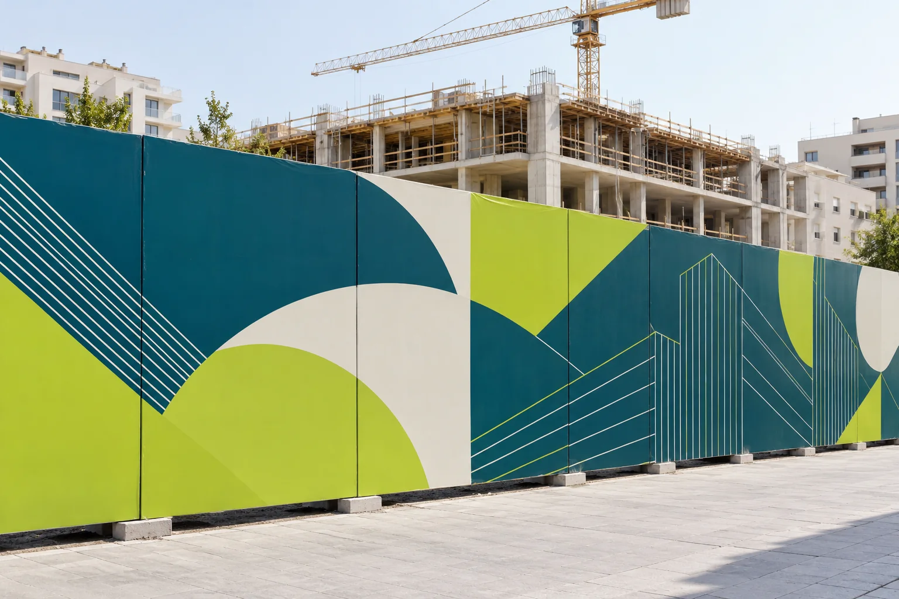
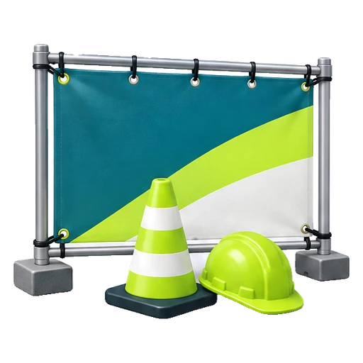
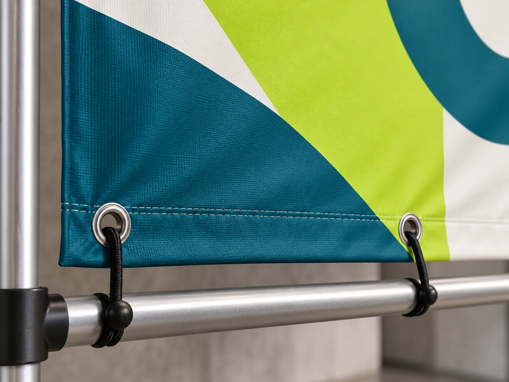
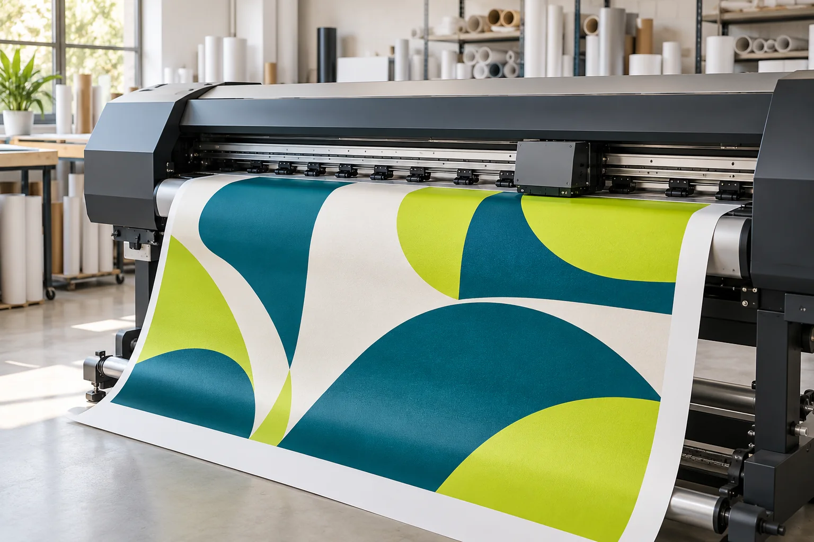

Les possibilités
Pour quels supports ?
- Habillage de palissade de chantier
- Bâches et panneaux de chantier imprimés
- Panneaux de présentation du projet


Un support adapté à votre projet
Notre atelier d’impression réalise l’impression des visuels pour habiller votre palissade de chantier. Présentation du projet immobilier, identité du promoteur ou orientation des visiteurs : chaque module doit rester lisible depuis la rue.
Selon le support existant, nous vous orientons vers une bâche imprimée, un panneau ou un vinyle adhésif. Pour le devis, transmettez la longueur et la hauteur de la clôture, des photos, la durée d’exposition et les contraintes de fixation. Le découpage du visuel tient compte des raccords, des angles et des accès au chantier.
Votre projet, votre budget
Le prix dépend du format, de la quantité, du support et des finitions. Tout est précisé dans votre devis gratuit.
Demander mon devis ↗ Ou écrivez-nous directementL’impression palissade de chantier habille une clôture tout en présentant votre projet. Le choix du support dépend de la structure existante : une bâche se fixe sur des points prévus à cet effet, un vinyle adhésif demande une surface compatible et les panneaux se préparent module par module. Transmettez des photos des surfaces, des jonctions et des accès pour définir une solution adaptée.
Nous préparons le visuel en tenant compte de la longueur, de la hauteur et du découpage de la palissade. Le nom du projet, les images et les coordonnées doivent rester lisibles depuis la rue. Les raccords, angles et portails sont repérés avant production pour éviter de couper une information essentielle. La durée d’exposition et les contraintes du chantier orientent le choix des finitions.
Le prix dépend de la surface, du support, du nombre de modules et des finitions. Précisez la création graphique attendue, les fichiers disponibles et le besoin éventuel de pose. Le devis distingue les prestations retenues. Les dimensions, le plan de découpe et le bon à tirer sont à valider avant le lancement de l’impression.
En pratique
La bâche convient à une structure permettant sa fixation. Le vinyle demande un support compatible avec son adhésif. Des photos et les caractéristiques de la clôture permettent de vérifier la solution à retenir.
Fournissez un plan coté de chaque module avec les angles et les accès. Les fichiers sont préparés selon les dimensions finales, les raccords et les zones de finition confirmées pour le support.
Précisez si vous souhaitez une impression seule ou une installation. La possibilité de pose, les contraintes d’accès et les fixations sont étudiées, puis les prestations incluses sont indiquées dans le devis.
Compléter votre communication



Devis gratuit. Nous vous conseillons sur le support, le format et les finitions.
Demander un devis Ou appelez le 05 22 48 44 25